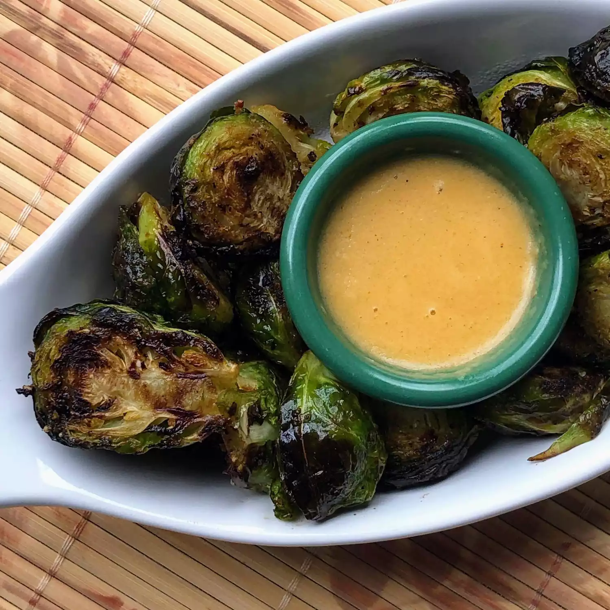

Mustard-Crusted Brussels Sprouts

Description
Air-fried smoky Brussels sprouts with a mustard crust.
Ingredients
- 2 tablespoons olive oil
- 1 tablespoon Dijon mustard
- 1/4 teaspoon smoked paprika
- 1/4 teaspoon salt
- 1/8 teaspoon ground black pepper
- 1 pound Brussels sprouts, trimmed and halved lengthwise
Steps
- Whisk oil, mustard, paprika, salt, and pepper together in a bowl. Add Brussels sprouts and toss to coat.
- Preheat an air fryer to 390 degrees F (195 degrees C).
- Add Brussels sprouts to the basket of the air fryer and cook for 7 minutes. Toss and cook until desired doneness, about 7 more minutes.